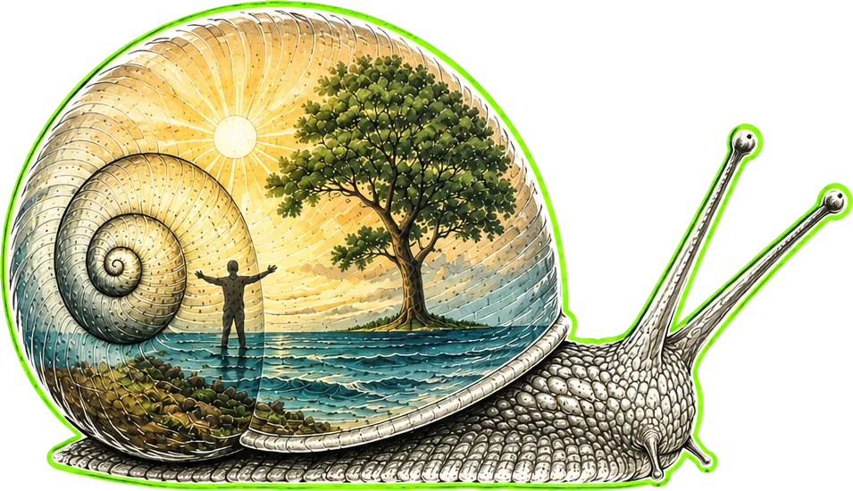

Dal pomeriggio
Esperienze da fare insieme
- Laboratori e attività partecipative
- Sport, movimento e benessere
- Incontri, musica acustica e testimonianze
- Showcooking e sapori del territorio
Nord Italia Festival del benessere e dell'inclusione
La Spirale della Vita è un festival da attraversare. Sette anelli uniscono natura, corpo, nutrizione, mente, anima, inclusione e innovazione. Al centro, tutto diventa spettacolo.
Prima edizione in costruzione. Sede, date e programma sono in via di definizione.

01 / La visione
La spirale non è una scenografia. È una strada continua, leggibile e senza gradini che accompagna ogni persona dal bordo esterno al palco centrale.
Dalla radice alla luce, una comunità cammina nella stessa direzione.
02 / Il percorso
Ogni tappa apre un mondo. Passa il cursore o usa il tasto Tab per seguirne il movimento verso il centro.
Alberi, acqua, accoglienza e suoni della natura.
Movimento, sport, postura e salute.
Prodotti del territorio, degustazioni e showcooking.
Psicologia, consapevolezza e crescita personale.
Musica, arte, spiritualità e silenzio.
Associazioni, sport paralimpici e tecnologie assistive.
Realtà virtuale, intelligenza artificiale ed energie rinnovabili.
Il palco centrale, il punto in cui la spirale si accende.
03 / L'esperienza
Dal pomeriggio
Quando scende la sera
04 / Inclusione nativa
Un percorso continuo e senza gradini. Attività progettate per essere vissute insieme. Competenze reali coinvolte fin dall'inizio.
05 / Per le famiglie
All'ingresso della spirale, un luogo protetto per giocare, creare e assaggiare. Giostre a tema natura, laboratori e piccoli riti di meraviglia perché il benessere comincia dal gioco.
06 / Entra nel progetto
Istituzioni, associazioni, scuole, realtà del territorio e imprese possono dare forma alla spirale con attività, competenze, servizi e sostegno.
Proponi una collaborazionePartner di contenuto
Partner per l'accessibilità
Sponsor di un anello
Istituzioni e territorio
Armonica Nature Festival
La prima edizione sta prendendo forma. Scrivici per ricevere informazioni o partecipare al progetto.
info@armonicafestival.it